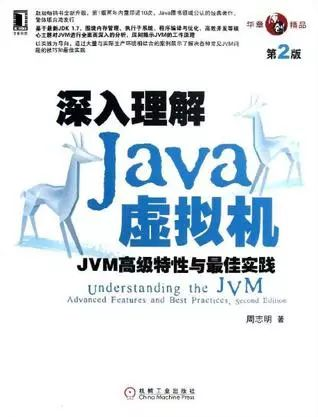
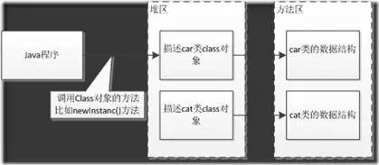
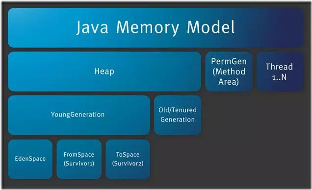
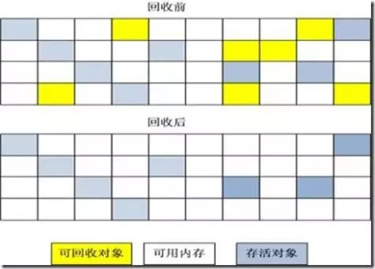
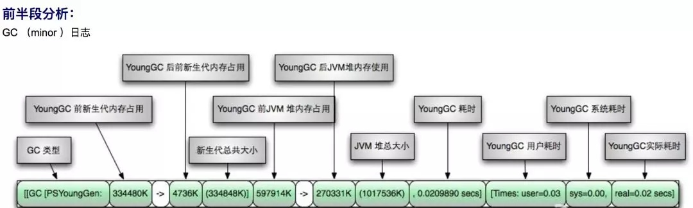
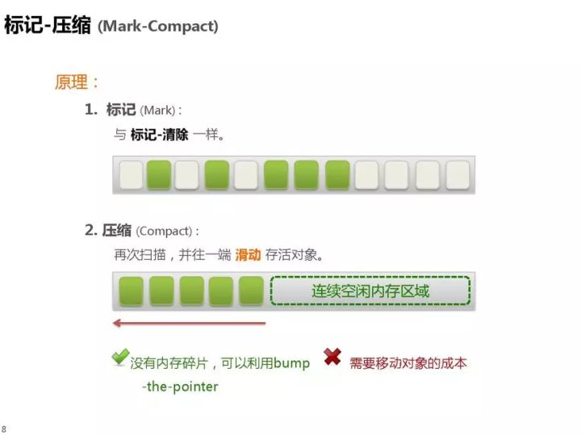
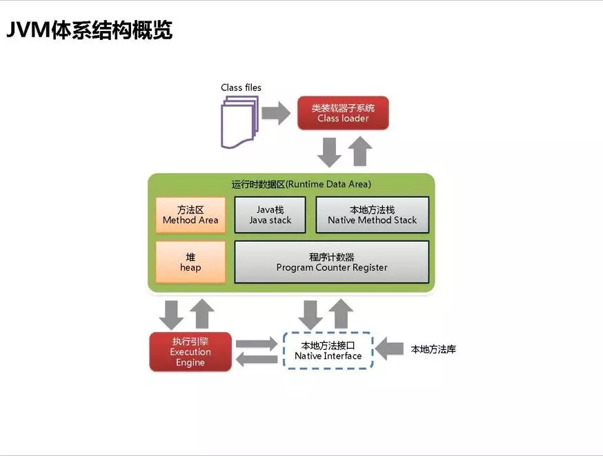

关于Jvm知识看这一篇就够了
公众号「纯洁的微笑」，编程•故事•思维
2016年左右的时候读了周志明《深入理解Java虚拟机：JVM高级特性与最佳实践》，读完之后受益匪浅，让我对Java虚拟机有了一个完整的认识，这是Jvm书籍中最好的读物之一。
后来结合实际工作中遇到的问题，写了一系列关于Jvm的文章，其中开篇的几篇内容大部分参考于此书，后期加入自己一些实战的理解，转载了几篇高质量的文章，就形成了此系列读物。

在金三银四的跳槽季中，很多小伙伴们都已经蠢蠢欲动，将此系列文章整理出来，希望可以帮助到大家。

第一篇文章讲的是Java类的加载机制，也是我在博客园最收欢迎的Jvm文章，读完之后你会了解什么是类加载器、类加载机制、双亲委派模型等内容。

这篇文章描述了Java虚拟机的内存结构，内存每个区域作用，如何通过参数对各个区域进行控制。

讲述了Jvm垃圾回收的经典算法，以及各种垃圾回收机制，对象存活判断等。
这篇文章讲述了如何通过Jvm命令去调优，各Jvm命令使用方法。
- 
- 这是非常有名的一张图，简单明了展示了GC日志的构成
- 文章介绍如何分析GC日志来诊断Java项目的运行状态，GC分析是生产调优的重要手段之一。
一名网友根据GC日志，进行Jvm调优的经典案例
介绍了Jvm调优各种工具的使用
如何你只是想通过面试，其实只要看一篇就够了，这篇文章将Jvm中的关键知识点进行了汇总。
翻译自国外的一篇Java GC文章，文章详细描述几种GC调优的方式，值得借鉴。
也是线上一场线上Jvm实战调优的经历，看着挺爽。
Java 8 Jvm内存变化
杜琪翻译的 Java 8 的新特性。
我们曾经线上出现事故后，定位分析的经历，结局出乎意料。
最后送给大家一个精美的Jvm ppt，到目前为止这是我见过介绍Jvm最漂亮的ppt，放两张截图给大家瞅瞅
